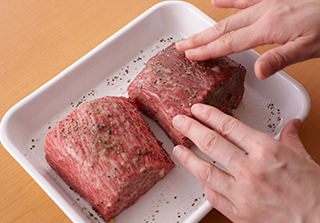
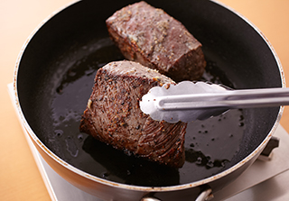
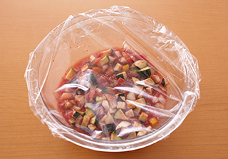
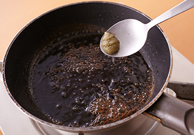
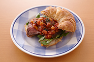

フライパンで簡単！ごちそうメニュー
焼き上がったらふたをして15分置くだけのおもてなしレシピ。 大きなブロック肉を使用する場合でも300ｇに切り分けて作ることで、 火の通りが絶妙になります！ラタトゥイユソースと柚子こしょうを きかせた和風ソースを添えれば、大人も子どもも嬉しい逸品に。

牛肉は300ｇずつに２つに切り分けておく。 塩、粗挽き黒こしょう各適量を多めにふり、 にんにくとともに肉にすり込む。

小さめのフライパン（または小鍋）にオリーブ油を弱めの中火で熱し、 肉を並べ入れる。1つの面につき各1分30秒ずつ焼き、全体をこんがりと 焼く。火を止めてコンロから外してふたをし、そのまま15分おく （牛肉を300ｇに切り分けられない場合は、火加減やおく時間は調整する）。

ラタトゥイユソースの野菜はそれぞれ1㎝角に切って耐熱の器に入れ、 他の材料、調味料も全て加えて混ぜる。ラップをふんわりかけて 電子レンジ（600W）で12分加熱する。味を見て足りないようなら 塩、粗挽き黒こしょう（分量外）で味をととのえる。

和風ソースは、別の小さめのフライパンにバター、ポン酢しょうゆを 入れて火にかけ、少し煮詰めたら柚子こしょうを加えて混ぜ、 火を止める。 牛肉を食べやすく切って皿に盛り、クレソン、 2種類のソースを添える。

ローストビーフをサンドイッチにするのもおいしい！
おすすめはクロワッサン。柔らかな食感がローストビーフとよく合います。
クレソン、ラタトゥイユソースを一緒にはさんで。